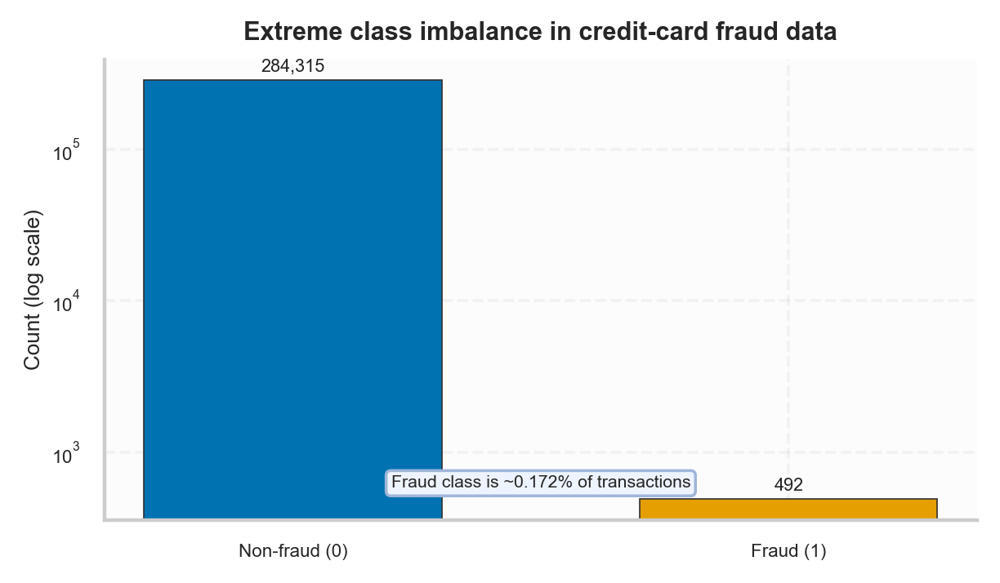
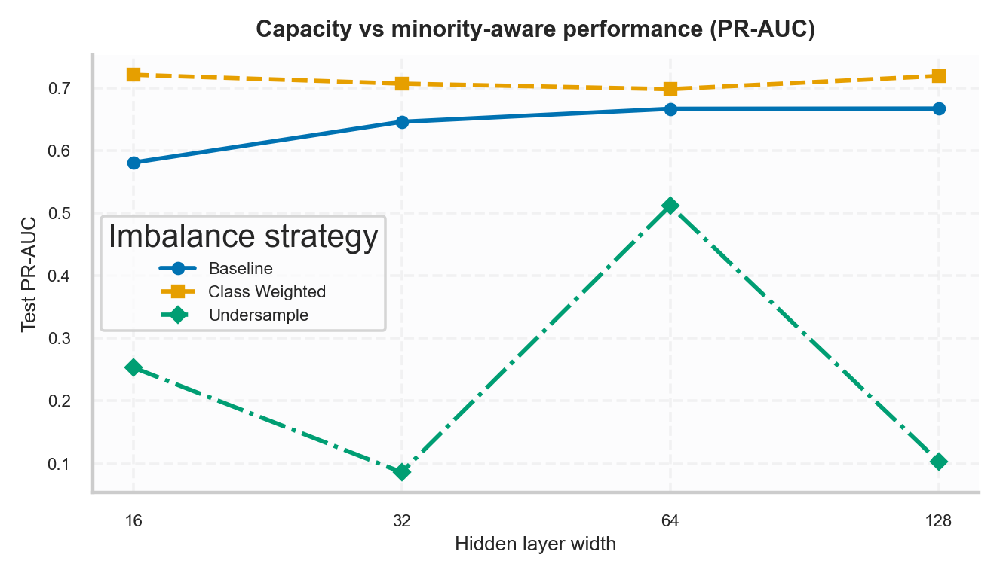
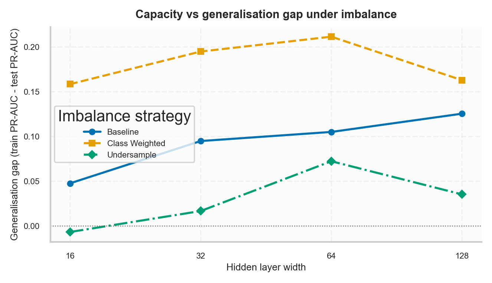
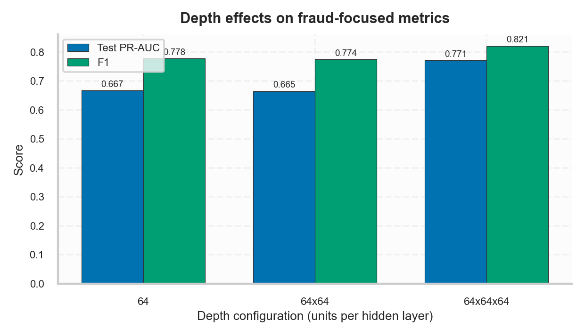
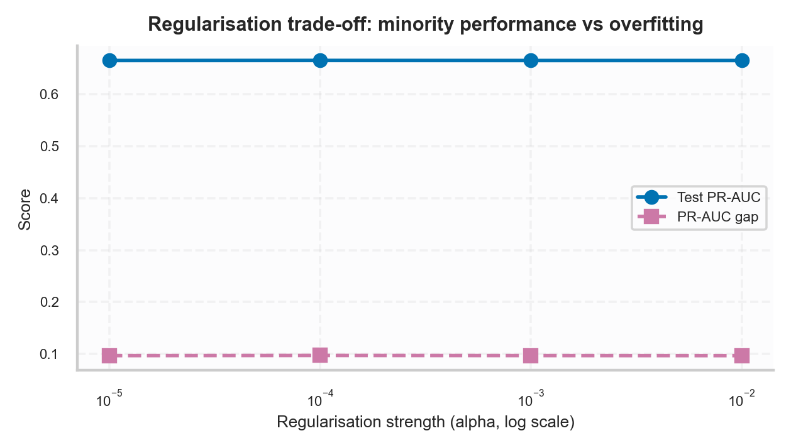
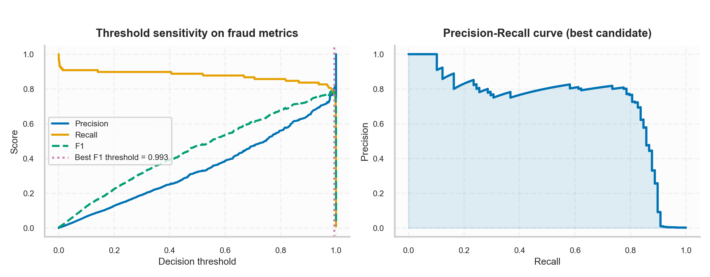
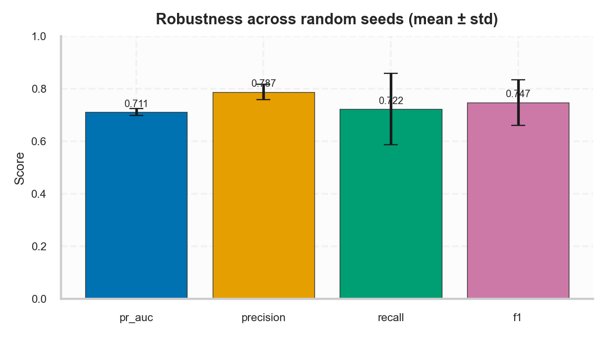
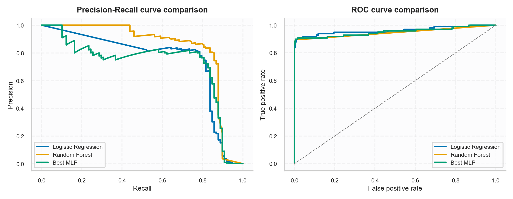
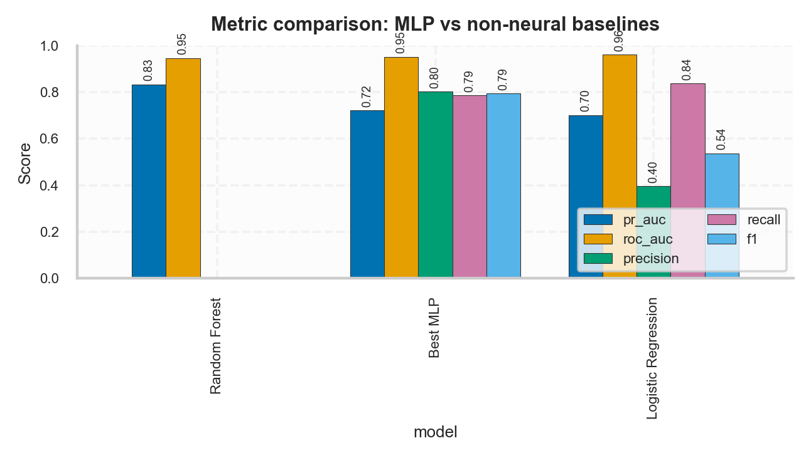

1) Objective and focus
The central question is: How does increasing neural-network capacity influence generalisation and minority-class detection in highly imbalanced data? I consider a Multilayer Perceptron (MLP) as I was in the classroom but add a real-life problem to it: high disparity between the two classes.
This tutorial prioritises Precision, Recall, F1, and PR-AUC are more important than accuracy since the task of fraud detection should work best on the minority class.
2) Data and its technical significance.
I work with the Kaggle Credit Card Fraud Detection dataset (Worldline + ULB collaboration): 284807 transactions and 492 frauds (0.172 positive class). V1..V28 are PCA components; Time and Amount are not PCA-transformed; Class is the target.

3) Experimental design
The imbalance strategies that are compared in the notebook are:
- Baseline: no balancing intervention.
- Class-weighted training: higher minority penalty through sample weighting.
- Random undersampling: reduce majority examples to create a balanced train subset.
I then sweep model capacity using MLP hidden-layer configurations:
- Width sweep: one hidden layer with widths 16, 32, 64, 128.
- Depth sweep: (64), (64,64), (64,64,64).
Generalisation is analysed using a PR-AUC gap: train PR-AUC - test PR-AUC. A larger gap indicates more overfitting.
Why PR-AUC?
Under extreme imbalance, ROC-AUC can look deceptively stable. PR-AUC focuses directly on precision/recall trade-offs for rare fraud cases.
4) Capacity versus performance of the minority class.
The major finding of the first key is that the wider the width, the higher the chances of detecting fraud. There are settings that maximize the fit of trains but do not maximize test PR-AUC. This shows that majority patterns can be overfitted to larger capacity particularly in extreme imbalance.


5) Depth effects and regularisation
Depth experiments indicate whether extra layers are beneficial to metrics used to detect fraud or make them more intricate.
I also vary L2 regularisation (alpha) to show the trade-off between fitting capacity and overfitting control.


6) Threshold tuning and operational decision-making
Fraud detection is not just a probability system. Heavy imbalance can have a default threshold that is many times not optimal. Through my analysis, I examine accuracy/recall/F1 by varying the threshold and choose a threshold that maximises the F1 of the chosen model.

7) Robustness across random seeds
To avoid over-interpreting single-run results, training is repeated across multiple random seeds and variability is reported (mean ± standard deviation). This enhances better methodology and increases reliability of the findings.

8) Comparison at baseline level and comparison at curve level.
To test uniqueness and technical rigor, the best MLP is compared against Logistic Regression and Random Forest. This is a response to one such scientific question: can neural capacity be really helpful in this case?


9) Why results behave this way
- Capacity overfitting mechanism: widening/deepening networks increases representational freedom, which can capture majority-class noise.
- Undersampling trade-off: it boosts fraud visibility but removes legitimate samples, which can destabilise decision boundaries.
- PR-AUC vs ROC-AUC: ROC-AUC can remain high in rare-event problems, while PR-AUC drops quickly when false positives rise.
- Threshold effect: probabilities are rankings; operating choices depend on threshold tuning.
10) Teaching takeaways for practitioners
- In case of imbalanced problems, begin with PR-AUC/Recall/F1 and not accuracy.
- Tune capacity gradually (width/depth) and inspect the train-test gap.
- Treat imbalance handling and threshold tuning as part of model design.
- Before scaling architecture use regularisation to stabilise generalisation.
- Check multi-seed robustness before claiming improvements.
- Always compare against strong non-neural baselines.
11) Limitations, ethics, and responsible use
This is not a production fraud system; it is merely an empirical and educative tutorial. Real deployments require drift monitoring, threshold calibration by business cost, privacy controls, and human review loops.
Issues of ethical AI relate to the issue of falsely identifying a customer, disproportional influence on users of AI products, and decision support transparency.
12) Accessibility checklist
- Semantic heading structure for screen readers.
- Alt text for every figure.
- Reduced-motion support through
prefers-reduced-motion. - Plots adopt color-blind friendly palettes as well as differences of markers/line.
References
- Pedregosa, F. et al. (2011). Scikit-learn: Machine Learning in Python. JMLR.
- Goodfellow, I., Bengio, Y., Courville, A. (2016). Deep Learning. MIT Press.
- Kaggle Credit Card Fraud Dataset: https://www.kaggle.com/datasets/mlg-ulb/creditcardfraud
- Dal Pozzolo, A. et al. (2014, 2015, 2018) and related fraud-detection papers cited on dataset page.